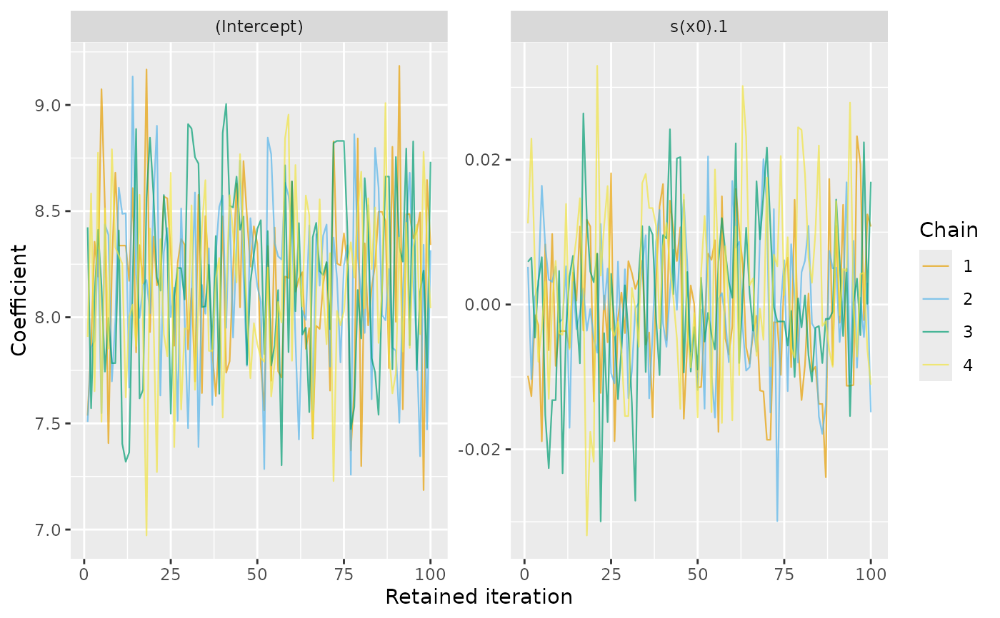
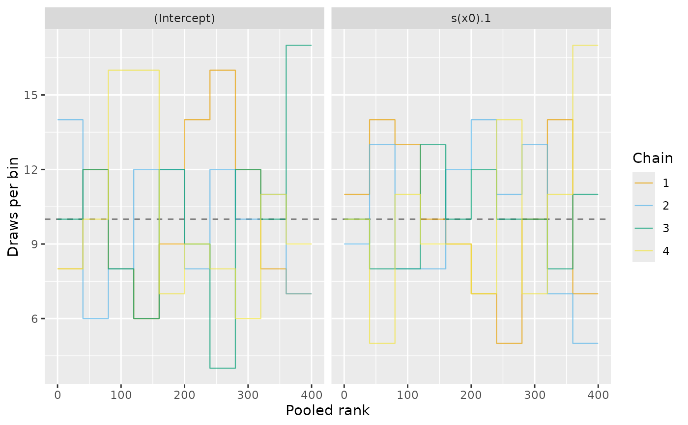

Plot coefficient-chain diagnostics
Source:R/draw-sampling-diagnostics.R
draw.sampling_diagnostics.RdNative ggplot2 displays of retained coefficient chains. Trace plots show movement over iterations, including repeated values after MH rejections. Rank plots compare overlaid histogram outlines for the ranks of each coefficient pooled across chains. Chains exploring the same distribution should have approximately uniform rank histograms. These plots complement the numerical summaries; similar-looking chains alone do not establish convergence.
Arguments
- object
A
sampling_diagnostics()object.- type
Either
"trace"or"rank".- select
Coefficients to plot, as exact names, positive integer positions, or a logical vector with one entry per coefficient. The default plots every available coefficient.
- n_bins
Positive integer; number of common pooled-rank bins. Used only for rank plots. Tied draws receive their average rank, without jitter.
- scales
Facet scales, either
"fixed"or"free". By default trace plots have separate coefficient scales and rank plots share a count scale.- ncol, nrow
Number of columns or rows in the panel layout.
- alpha
Deprecated; use
gratia_theme_get()theme settings instead. Transparency of the chain lines.- linewidth
Deprecated; use
gratia_theme_get()theme settings instead. Width of the chain lines.- discrete_colour
An optional ggplot2 discrete colour scale. Defaults follow gratia's smooth plots: Okabe-Ito for up to nine chains, then hue.
- ...
Additional arguments passed to
ggplot2::facet_wrap().
Value
A ggplot2::ggplot() object.
Details
The trace x axis counts retained iterations within each chain, rather than the globally unique draw number. Burn-in is discarded by the samplers and cannot be displayed. With thinning, successive plotted iterations represent successive retained draws, not successive MH transitions.
Rank plots require at least two chains. Ranks are computed separately for each selected coefficient, pooling all chains. A dashed line shows the average count per bin. Independent continuous draws from the same distribution should give approximately flat histograms. Autocorrelation and ties affect the histogram variation; the reference line is not a confidence bound.
Plots always describe coefficient draws, including when diagnostics are
extracted from response samples or smooths. For transformed quantities use
as_mcmc_draws() with external diagnostic tools. Sampling with
diagnostics = TRUE retains coefficient draws for plotting from those
outputs. Coefficient matrices can be plotted whenever their sampling
metadata are available, even without numerical diagnostic summaries.
Label layout
Pass label_control = draw_label_control(...) to draw() to wrap discrete
axis labels and legend text, stagger discrete tick labels, or adjust legend
and colour-bar layout. Settings apply to each panel, including unwrapped
plot lists. See draw_label_control() for the available settings.
Examples
load_mgcv()
dat <- data_sim("eg1", n = 100, seed = 42)
model <- gam(y ~ s(x0, k = 5), data = dat, method = "REML")
b <- post_draws(model, n_draws = 400, chains = 4, method = "mh",
burnin = 100, seed = 281)
diagnostics <- sampling_diagnostics(b)
draw(diagnostics, select = 1:2)

draw(diagnostics, type = "rank", select = 1:2, n_bins = 10)
